Hi all,
Last month I got to take on a new project with Chelsea FC, thanks to Manny reaching out on socials. It was honestly great fun hosting a competition with them. You can check out some of the details on the site we createdfor it using github pages.
The eagle eyed amongst you might have realised this was why i did a blog not long back based on html templates on github.... because I was learning it at the same time.
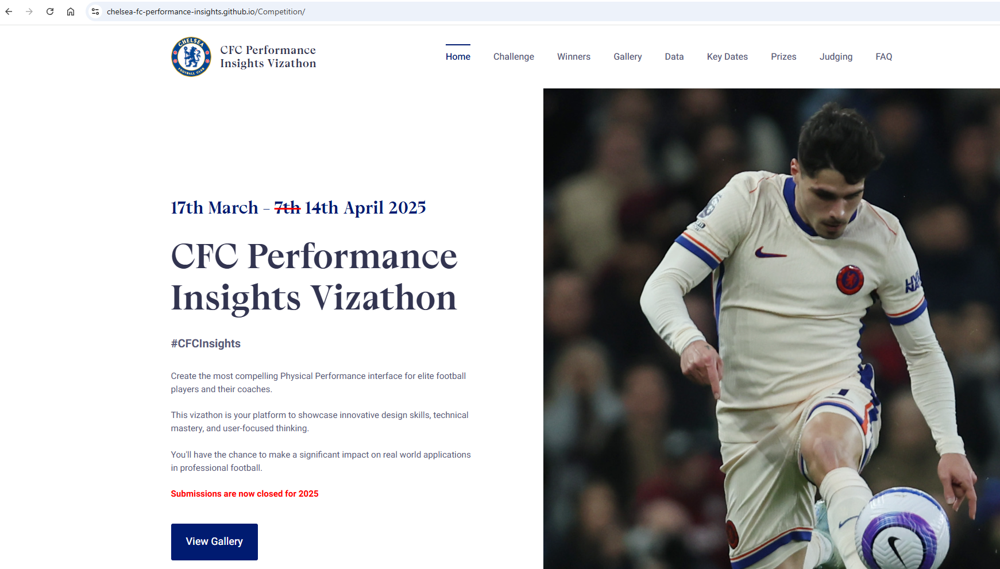
The competition was a huge success, leading to 124 entries across 27 countries. 366 file submissions to go through and an additional 50 video submissions. It by no means was easy for Rich, Manny, Peter, myself and of course guest judge Marc Cucurella, to make a decision on the winners!! But with that being said....
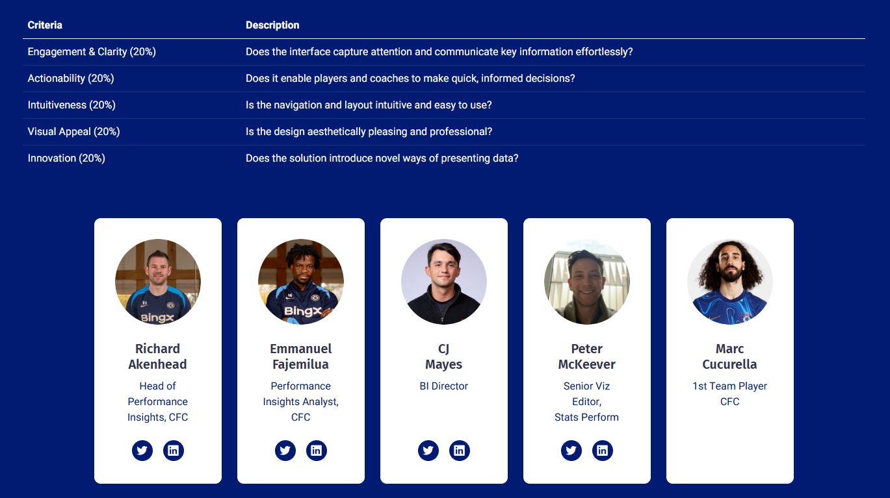
I got time to sit down after the competition with the winner, Tiago - to talk a little more about his entry.
CJ: Tiago, thank you for giving up time to share more on your winning entry to the Chelsea FC Insights Vizathon. Let’s start with a little about you - how did you get into data? Do you see much cross over between your role in tech advisory?
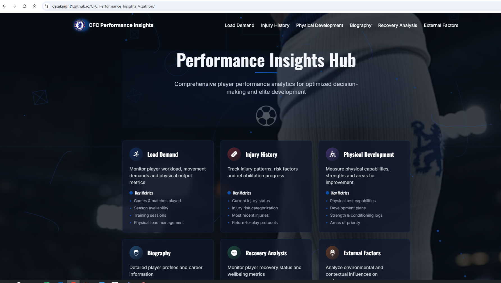
T: Hi CJ, thank you so much for the opportunity to present myself and share a bit about my work. My introduction to data emerged from a passion for football, I began by using Excel to dissect match statistics, and soon discovered advanced techniques, moving averages, Elo ratings through a Portuguese YouTuber. Consequently, I launched independent side projects in which I built ETL pipelines to ingest and transform match and player data.Regarding the connections between my role and football data, I see a profound crossover between my advisory role and football analytics because both require an end-to-end mindset framing domain challenges, architecting data workflows, and delivering actionable insights. Ultimately, I believe that those who truly leverage technology and data become decision-makers, whereas those who merely consult data remain only informed, a critical distinction that is shaping the future of any industry.
CJ: Tiagos entry can be found here.CJ: What is it about football analytics you find fascinating? Of the 6 different modules in the competition, what stood out to you when you started creating your charts?T: What captivates me most about football analytics is the relentless quest to master the sport’s inherent unpredictability. Every week, we dedicate countless hours to developing data-driven models, whether grounded in expected-goals, passing networks or sequence analysis, so that by match day we can tip the scales, however slightly, in our favor. That moment when theory materializes into actionable insight on the pitch is, to me, the very essence of its magic.When I turned to the Load Demand module for the Vizathon, I found it especially compelling because it anchors every analytic perspective in real-world context. In modern football, fixture congestion and training availability are arguably the single most critical factors affecting performance. Consequently, I focused on crafting visualizations that not only convey workload metrics but also remain instantly intelligible, allowing coaches and analysts of any background to grasp the core message at a glance.CJ: Of the 6 modules, which do you think are the easiest, or hardest metrics to obtain. How does bringing all these metrics together help go from insight to action?T: Of the six modules, training-intensity metrics are by far the easiest to obtain, thanks to the proliferation of IoT devices, GPS trackers, accelerometers and heart‐rate monitors, that stream load data in real time. Modern sensor networks can capture every sprint, tackle and rest interval, enabling immediate analysis of workload without manual intervention. Conversely, recovery metrics present the greatest challenge, owing to the vast genetic and physiological variability among players. With roughly 30 trillion cells per individual and twenty-plus athletes per squad, each body responds uniquely to stress and treatment, as a result, pinning down precise recovery timelines or injury‐risk thresholds remains more art than science.
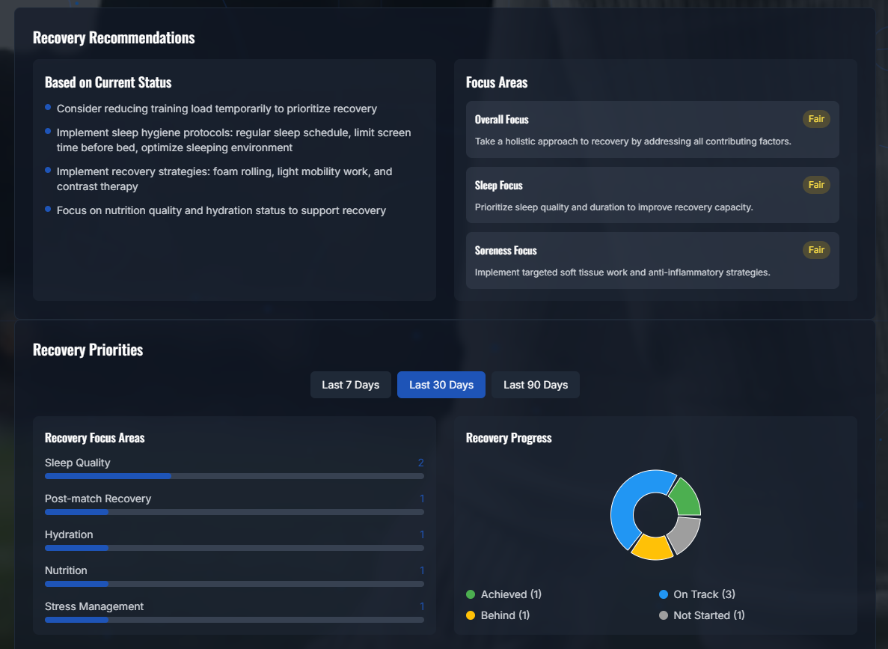
Bringing all six modules together transforms isolated observations into a coherent decision-support system. By first defining clear, outcome-driven questions, each visualization is crafted to answer a specific operational need, be it optimizing rotation schedules or identifying fatigue‐induced performance dips.CJ: One thing that particularly shone through was how cohesive the site felt. Could you walk us through the tech stack you use to build the site?T: The technical decisions behind my Chelsea FC Performance Insights platform weren't made in isolation, they emerged from the specific challenges I faced trying to build something genuinely useful for football analytics while working within realistic constraints.I chose GitHub for hosting because I needed something that would just work without becoming a project in itself. When you're building a data-heavy application like this, deployment complexity can easily consume more time than the actual development. GitHub Pages solved this easily, push to main, and the site updates automatically. More importantly, GitHub's integration with the development workflow meant I could iterate rapidly without context-switching between different tools. The version control aspect became crucial when working with Claude Code, since I needed a reliable way to track what changes were being made and why. Having everything in one ecosystem such as code, issues, deployment, documentation, eliminated the friction that usually kills side projects.
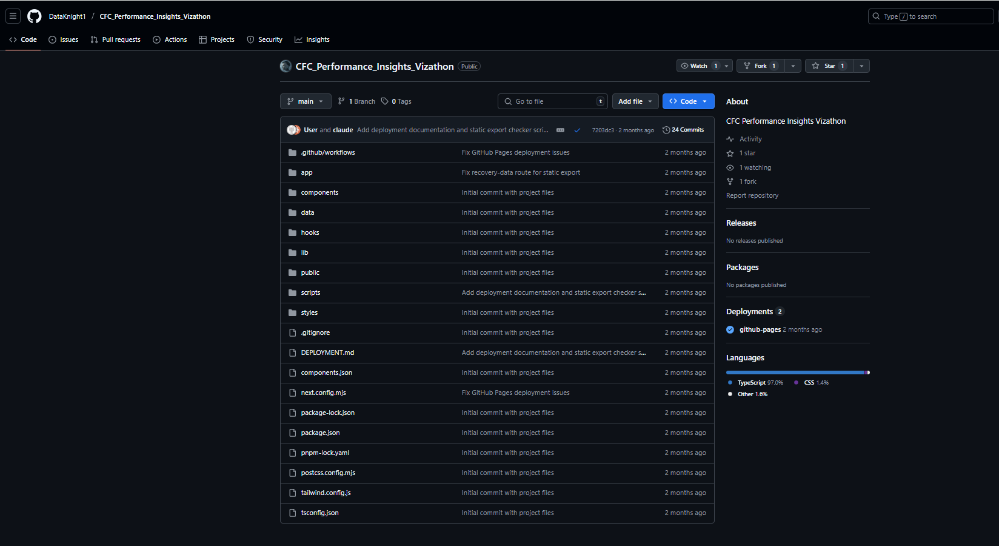
Using Claude Code as my frontend engineering partner was perhaps the most transformative decision. I didn't approach this as "AI helping with coding" but rather as "AI as a specialized team member." Claude Code could maintain context across the entire codebase, understand the design system I was building, and implement complex features while staying consistent with established patterns. When I needed the animated football pitch background, I could describe the visual effect I wanted and Claude Code would not only implement it but integrate it properly with the existing CSS architecture. This wasn't just about speed, it was about having a partner that could handle the tedious parts of maintaining consistency across dozens of components while I focused on the bigger architectural decisions.React became the obvious choice once I understood what I was really building. This isn't just a website displaying football data, it's an interactive analytics platform where everything needs to respond to user input. Players click between different time periods, filter data by various criteria, export reports, and drill down into detailed views. React's component model maps perfectly to how football analytics actually work: you have players, you have metrics, you have time periods, and you need all these elements to interact seamlessly. The virtual DOM ensures smooth performance even when updating complex charts and tables, which matters when you're dealing with real-time data exploration.
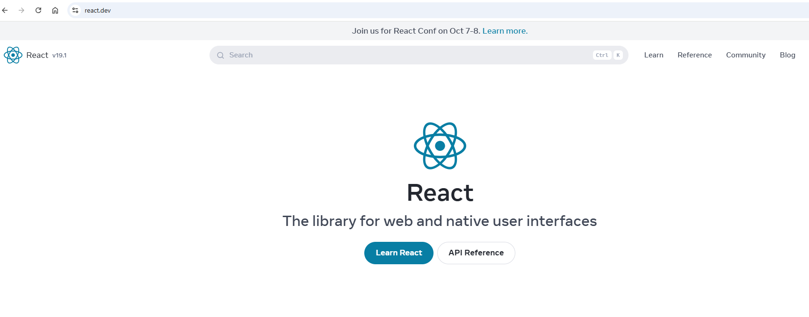
The Next.js decision came from understanding my deployment requirements and performance goals. I needed static site generation because this would eventually be hosted on GitHub Pages, but I also wanted the developer experience of a modern React framework. Next.js gave me both, I could build with modern tooling and deploy as static files. The framework's API routes let me prototype with mock data during development while keeping the door open for real data integration later. This architectural flexibility proved essential as the project evolved.TypeScript integration happened because I learned from previous projects where small data handling errors cascaded into major debugging sessions. When you're transforming player performance data through multiple calculation layers before rendering it in charts. TypeScript caught countless issues where data structure assumptions didn't match reality, particularly when integrating different data sources. It also served as documentation for Claude Code, making it clear what data structures each component expected.The static site architecture with GitHub Pages hosting wasn't just about cost (though free hosting helps), it was about reliability and performance. Football analytics tools need to be available when decisions are being made, often under pressure. Static sites eliminate server dependencies, database connectivity issues, and scaling concerns. The trade-off is more complex data handling on the frontend, but modern JavaScript tools make this manageable.CJ: Sometimes the smaller touches go a long way, such as the subtle moving background, click accordion menus, report generations, and hover highlights. Can you talk us through a few of the smaller design aspects you think help with the responsive design?T: The subtle details make the interface feel professional rather than functional. The animated football pitch background provides visual relief during long data analysis sessions while maintaining context, it's low-opacity Canvas animation that won't strain performance.Hover highlights solve a real problem with dense data tables. When scanning player statistics, you lose track of which row you're examining. The Chelsea blue hover states guide the eye and reduce cognitive load using CSS transitions for smooth performance.
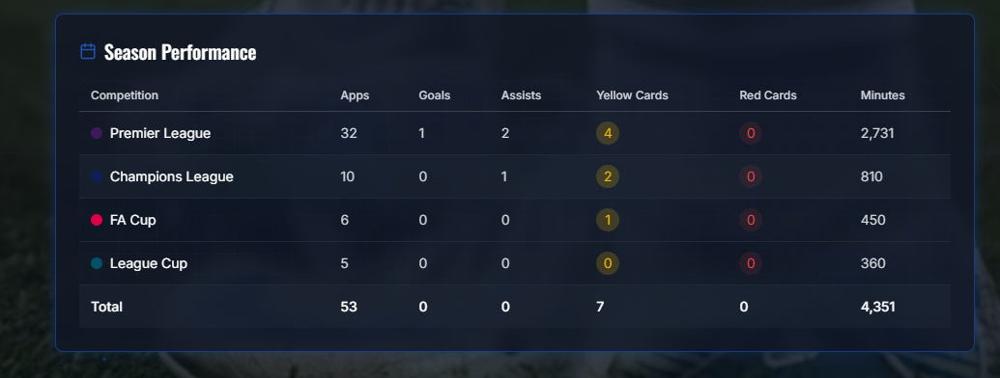
Accordion menus address mobile constraints directly. Football analytics requires multiple information categories, but mobile screens lack vertical space. Accordions let users control screen real estate while maintaining access to all data. Click interactions work better than hover on touch devices.
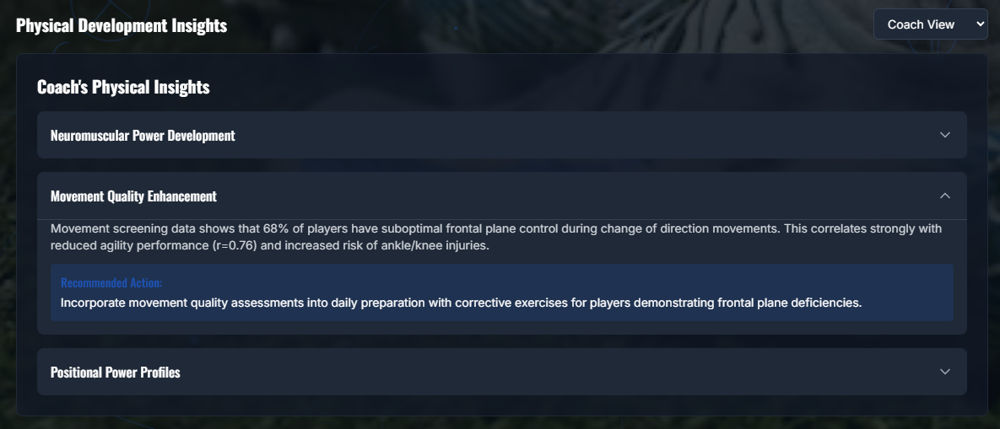
Report generation reflects actual usage patterns. Coaches need to extract insights and share findings, not just view data. The CSV/PDF export options serve different needs, CSV for analysis, PDF for presentations. These had to feel integrated, not bolted-on.
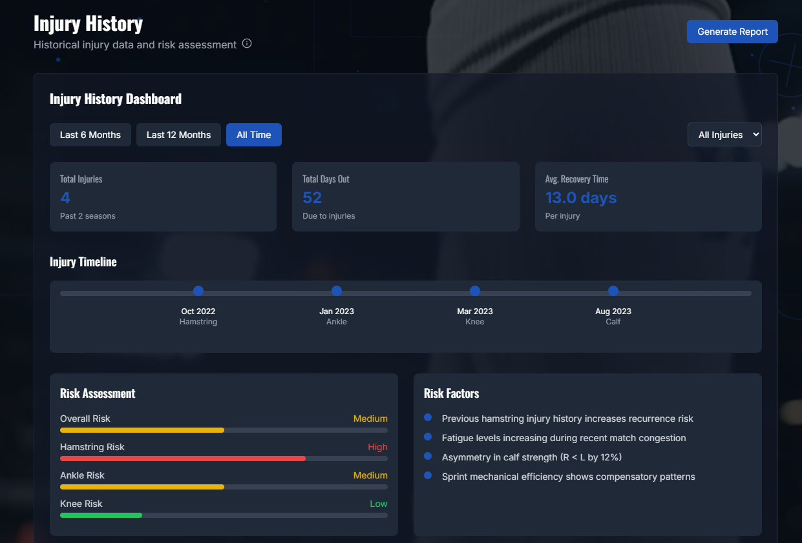
These micro-interactions compound to create responsiveness in both screen adaptation and user interaction feedback. Every hover and transition builds interface confidence through consistent visual language.CJ: As you know competition was fairly fierce, with the shortlist being whittled down from 120+ entries to 50. I’m curious to hear as the overall winner, liked in Adedamola’s best component entry, as well as Antoine's functional design entry?
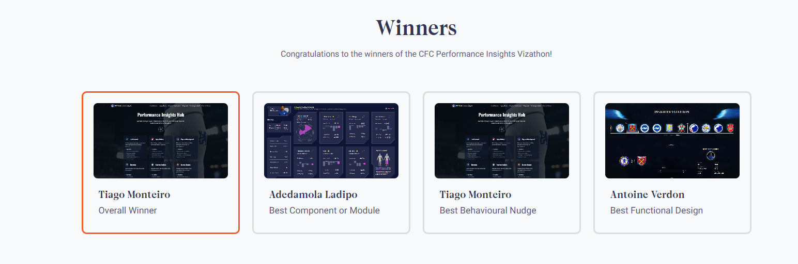
T: Both entries were outstanding. Adedamola’s dashboard impressed me with its elegant simplicity, it distilled years of expertise into visuals that feel effortless, yet beneath the surface it handles a complex array of metrics with seamless clarity. Antoine’s UX/UI approach, meanwhile, captivated me by turning scrolling into an interactive narrative, every scroll down the page revealed a new insight, sparking curiosity and engagement. While I focused on delivering a fully unified solution that weaves all six modules into a single cohesive story, I deeply admire how each of these peers excelled in their specialized strengths, and I walked away with several fresh ideas to incorporate into future projects.CJ: This was your first time entering a vizathon, right? What advice would you give to others to be motivated to compete? Can we hope to see more from you in the sports industry in months to come?T: Although this was my first Vizathon, I previously took part in the Portuguese Federation Datathon, where we built an end-to-end data pipeline to assess how match volume influences national team selection. My advice to aspiring competitors is simple: just try. You’ll connect with peers who share your passion for data and football, and you’ll discover that perceived boundaries are often just the starting point. Competitions like these force you to think differently, take calculated risks and grow as both analyst and storyteller. As for the future, you can certainly expect more, I’m committed to leveraging data to strengthen the football ecosystem and look forward to sharing new insights in the months ahead.For now, I will just keep working and trust that the opportunities I believe in will come.Thank you once again, CJ, for your time and this wonderful opportunity. I truly appreciate it and look forward to what lies ahead.LOGGING OFF,
CJ
 When I turned to the Load Demand module for the Vizathon, I found it especially compelling because it anchors every analytic perspective in real-world context. In modern football, fixture congestion and training availability are arguably the single most critical factors affecting performance. Consequently, I focused on crafting visualizations that not only convey workload metrics but also remain instantly intelligible, allowing coaches and analysts of any background to grasp the core message at a glance.
CJ: Of the 6 modules, which do you think are the easiest, or hardest metrics to obtain. How does bringing all these metrics together help go from insight to action?
T: Of the six modules, training-intensity metrics are by far the easiest to obtain, thanks to the proliferation of IoT devices, GPS trackers, accelerometers and heart‐rate monitors, that stream load data in real time. Modern sensor networks can capture every sprint, tackle and rest interval, enabling immediate analysis of workload without manual intervention.
Conversely, recovery metrics present the greatest challenge, owing to the vast genetic and physiological variability among players. With roughly 30 trillion cells per individual and twenty-plus athletes per squad, each body responds uniquely to stress and treatment, as a result, pinning down precise recovery timelines or injury‐risk thresholds remains more art than science.
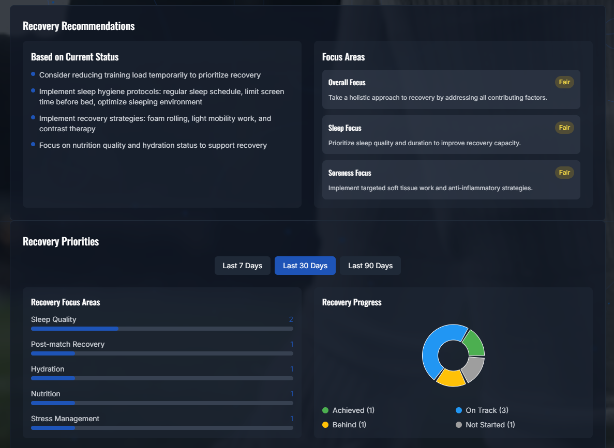
Bringing all six modules together transforms isolated observations into a coherent decision-support system. By first defining clear, outcome-driven questions, each visualization is crafted to answer a specific operational need, be it optimizing rotation schedules or identifying fatigue‐induced performance dips.
CJ: One thing that particularly shone through was how cohesive the site felt. Could you walk us through the tech stack you use to build the site?
T: The technical decisions behind my Chelsea FC Performance Insights platform weren't made in isolation, they emerged from the specific challenges I faced trying to build something genuinely useful for football analytics while working within realistic constraints.
I chose GitHub for hosting because I needed something that would just work without becoming a project in itself. When you're building a data-heavy application like this, deployment complexity can easily consume more time than the actual development. GitHub Pages solved this easily, push to main, and the site updates automatically. More importantly, GitHub's integration with the development workflow meant I could iterate rapidly without context-switching between different tools. The version control aspect became crucial when working with Claude Code, since I needed a reliable way to track what changes were being made and why. Having everything in one ecosystem such as code, issues, deployment, documentation, eliminated the friction that usually kills side projects.
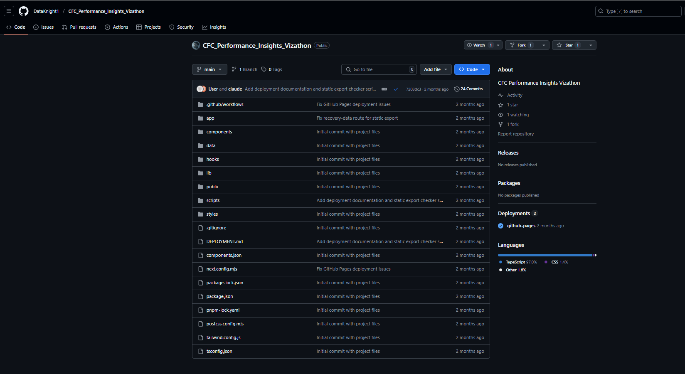
Using Claude Code as my frontend engineering partner was perhaps the most transformative decision. I didn't approach this as "AI helping with coding" but rather as "AI as a specialized team member." Claude Code could maintain context across the entire codebase, understand the design system I was building, and implement complex features while staying consistent with established patterns. When I needed the animated football pitch background, I could describe the visual effect I wanted and Claude Code would not only implement it but integrate it properly with the existing CSS architecture. This wasn't just about speed, it was about having a partner that could handle the tedious parts of maintaining consistency across dozens of components while I focused on the bigger architectural decisions.
When I turned to the Load Demand module for the Vizathon, I found it especially compelling because it anchors every analytic perspective in real-world context. In modern football, fixture congestion and training availability are arguably the single most critical factors affecting performance. Consequently, I focused on crafting visualizations that not only convey workload metrics but also remain instantly intelligible, allowing coaches and analysts of any background to grasp the core message at a glance.
CJ: Of the 6 modules, which do you think are the easiest, or hardest metrics to obtain. How does bringing all these metrics together help go from insight to action?
T: Of the six modules, training-intensity metrics are by far the easiest to obtain, thanks to the proliferation of IoT devices, GPS trackers, accelerometers and heart‐rate monitors, that stream load data in real time. Modern sensor networks can capture every sprint, tackle and rest interval, enabling immediate analysis of workload without manual intervention.
Conversely, recovery metrics present the greatest challenge, owing to the vast genetic and physiological variability among players. With roughly 30 trillion cells per individual and twenty-plus athletes per squad, each body responds uniquely to stress and treatment, as a result, pinning down precise recovery timelines or injury‐risk thresholds remains more art than science.
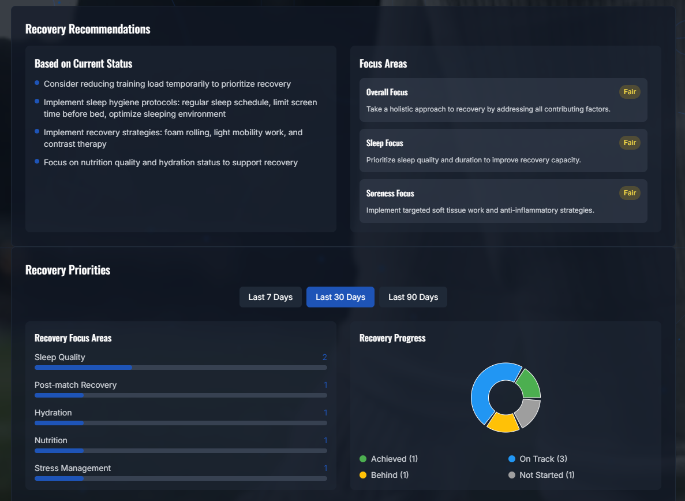
Bringing all six modules together transforms isolated observations into a coherent decision-support system. By first defining clear, outcome-driven questions, each visualization is crafted to answer a specific operational need, be it optimizing rotation schedules or identifying fatigue‐induced performance dips.
CJ: One thing that particularly shone through was how cohesive the site felt. Could you walk us through the tech stack you use to build the site?
T: The technical decisions behind my Chelsea FC Performance Insights platform weren't made in isolation, they emerged from the specific challenges I faced trying to build something genuinely useful for football analytics while working within realistic constraints.
I chose GitHub for hosting because I needed something that would just work without becoming a project in itself. When you're building a data-heavy application like this, deployment complexity can easily consume more time than the actual development. GitHub Pages solved this easily, push to main, and the site updates automatically. More importantly, GitHub's integration with the development workflow meant I could iterate rapidly without context-switching between different tools. The version control aspect became crucial when working with Claude Code, since I needed a reliable way to track what changes were being made and why. Having everything in one ecosystem such as code, issues, deployment, documentation, eliminated the friction that usually kills side projects.
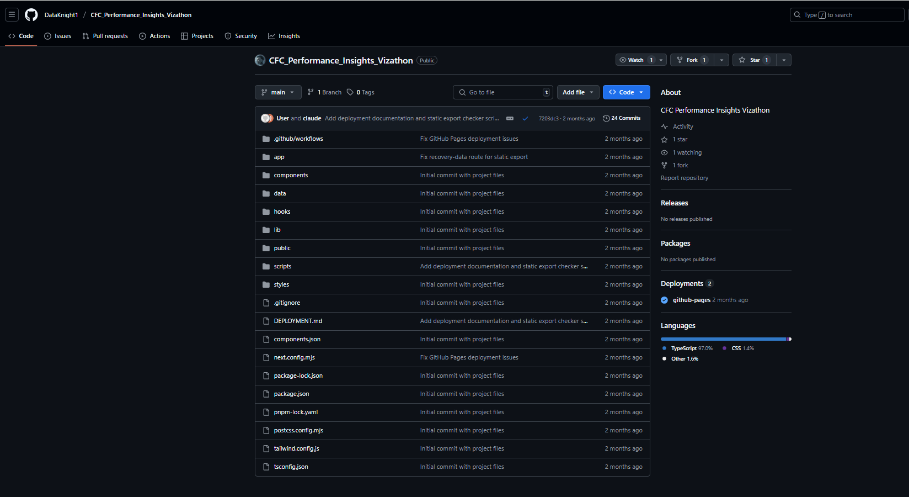
Using Claude Code as my frontend engineering partner was perhaps the most transformative decision. I didn't approach this as "AI helping with coding" but rather as "AI as a specialized team member." Claude Code could maintain context across the entire codebase, understand the design system I was building, and implement complex features while staying consistent with established patterns. When I needed the animated football pitch background, I could describe the visual effect I wanted and Claude Code would not only implement it but integrate it properly with the existing CSS architecture. This wasn't just about speed, it was about having a partner that could handle the tedious parts of maintaining consistency across dozens of components while I focused on the bigger architectural decisions.
 React became the obvious choice once I understood what I was really building. This isn't just a website displaying football data, it's an interactive analytics platform where everything needs to respond to user input. Players click between different time periods, filter data by various criteria, export reports, and drill down into detailed views. React's component model maps perfectly to how football analytics actually work: you have players, you have metrics, you have time periods, and you need all these elements to interact seamlessly. The virtual DOM ensures smooth performance even when updating complex charts and tables, which matters when you're dealing with real-time data exploration.
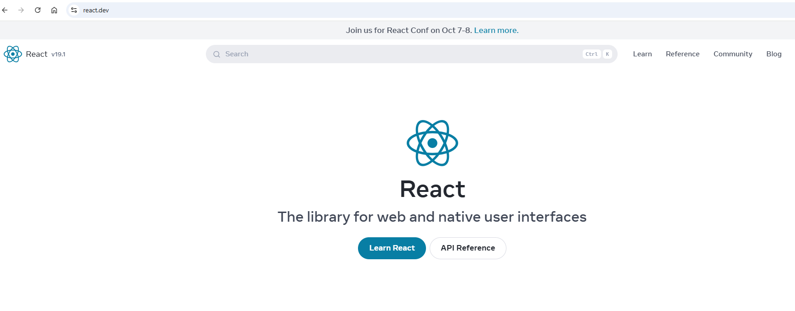
The Next.js decision came from understanding my deployment requirements and performance goals. I needed static site generation because this would eventually be hosted on GitHub Pages, but I also wanted the developer experience of a modern React framework. Next.js gave me both, I could build with modern tooling and deploy as static files. The framework's API routes let me prototype with mock data during development while keeping the door open for real data integration later. This architectural flexibility proved essential as the project evolved.
TypeScript integration happened because I learned from previous projects where small data handling errors cascaded into major debugging sessions. When you're transforming player performance data through multiple calculation layers before rendering it in charts. TypeScript caught countless issues where data structure assumptions didn't match reality, particularly when integrating different data sources. It also served as documentation for Claude Code, making it clear what data structures each component expected.
The static site architecture with GitHub Pages hosting wasn't just about cost (though free hosting helps), it was about reliability and performance. Football analytics tools need to be available when decisions are being made, often under pressure. Static sites eliminate server dependencies, database connectivity issues, and scaling concerns. The trade-off is more complex data handling on the frontend, but modern JavaScript tools make this manageable.
CJ: Sometimes the smaller touches go a long way, such as the subtle moving background, click accordion menus, report generations, and hover highlights. Can you talk us through a few of the smaller design aspects you think help with the responsive design?
T: The subtle details make the interface feel professional rather than functional. The animated football pitch background provides visual relief during long data analysis sessions while maintaining context, it's low-opacity Canvas animation that won't strain performance.
Hover highlights solve a real problem with dense data tables. When scanning player statistics, you lose track of which row you're examining. The Chelsea blue hover states guide the eye and reduce cognitive load using CSS transitions for smooth performance.
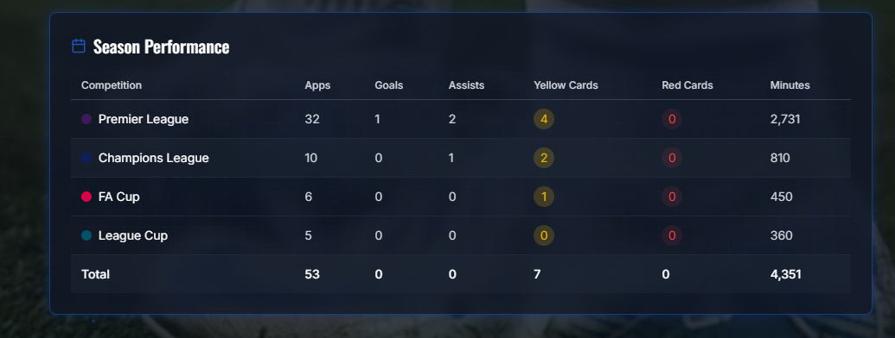
Accordion menus address mobile constraints directly. Football analytics requires multiple information categories, but mobile screens lack vertical space. Accordions let users control screen real estate while maintaining access to all data. Click interactions work better than hover on touch devices.
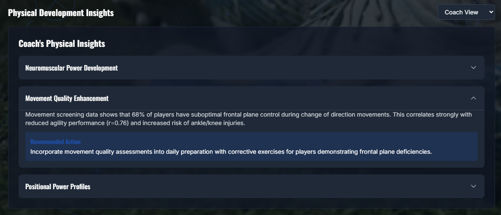
Report generation reflects actual usage patterns. Coaches need to extract insights and share findings, not just view data. The CSV/PDF export options serve different needs, CSV for analysis, PDF for presentations. These had to feel integrated, not bolted-on.
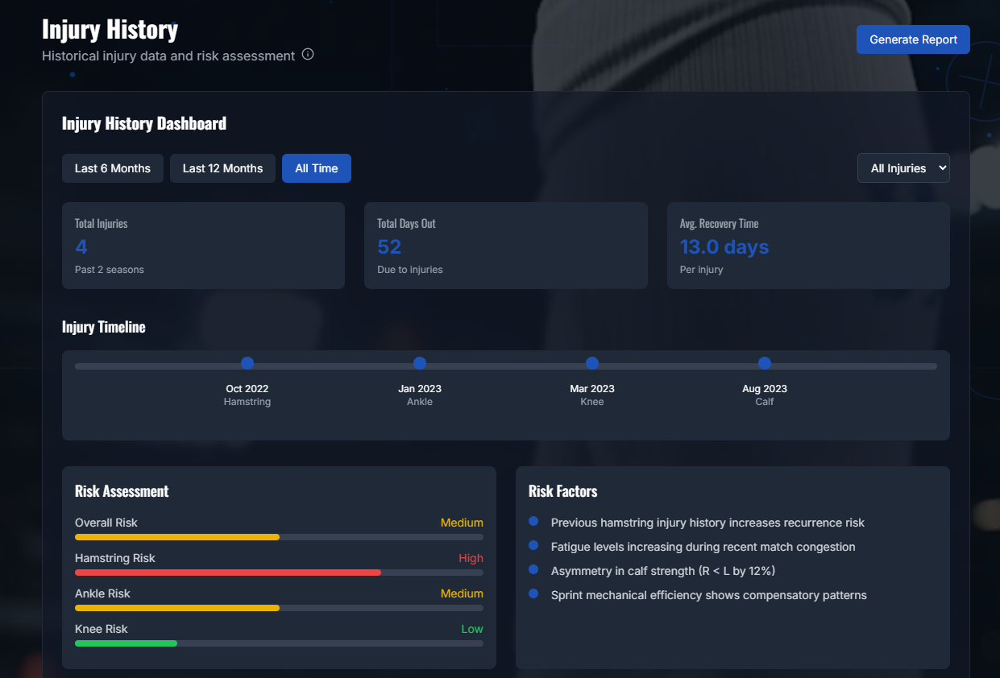
These micro-interactions compound to create responsiveness in both screen adaptation and user interaction feedback. Every hover and transition builds interface confidence through consistent visual language.
CJ: As you know competition was fairly fierce, with the shortlist being whittled down from 120+ entries to 50. I’m curious to hear as the overall winner, liked in Adedamola’s best component entry, as well as Antoine's functional design entry?
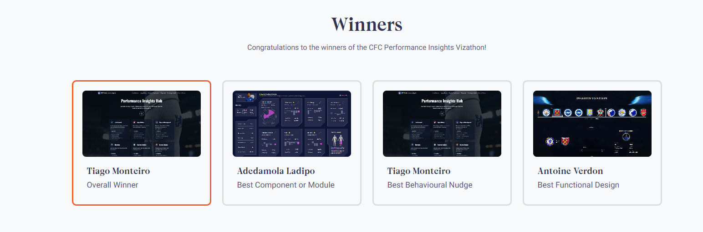
T: Both entries were outstanding. Adedamola’s dashboard impressed me with its elegant simplicity, it distilled years of expertise into visuals that feel effortless, yet beneath the surface it handles a complex array of metrics with seamless clarity.
Antoine’s UX/UI approach, meanwhile, captivated me by turning scrolling into an interactive narrative, every scroll down the page revealed a new insight, sparking curiosity and engagement.
While I focused on delivering a fully unified solution that weaves all six modules into a single cohesive story, I deeply admire how each of these peers excelled in their specialized strengths, and I walked away with several fresh ideas to incorporate into future projects.
CJ: This was your first time entering a vizathon, right? What advice would you give to others to be motivated to compete? Can we hope to see more from you in the sports industry in months to come?
T: Although this was my first Vizathon, I previously took part in the Portuguese Federation Datathon, where we built an end-to-end data pipeline to assess how match volume influences national team selection. My advice to aspiring competitors is simple: just try. You’ll connect with peers who share your passion for data and football, and you’ll discover that perceived boundaries are often just the starting point. Competitions like these force you to think differently, take calculated risks and grow as both analyst and storyteller. As for the future, you can certainly expect more, I’m committed to leveraging data to strengthen the football ecosystem and look forward to sharing new insights in the months ahead.For now, I will just keep working and trust that the opportunities I believe in will come.
Thank you once again, CJ, for your time and this wonderful opportunity. I truly appreciate it and look forward to what lies ahead.
LOGGING OFF,
CJ
React became the obvious choice once I understood what I was really building. This isn't just a website displaying football data, it's an interactive analytics platform where everything needs to respond to user input. Players click between different time periods, filter data by various criteria, export reports, and drill down into detailed views. React's component model maps perfectly to how football analytics actually work: you have players, you have metrics, you have time periods, and you need all these elements to interact seamlessly. The virtual DOM ensures smooth performance even when updating complex charts and tables, which matters when you're dealing with real-time data exploration.
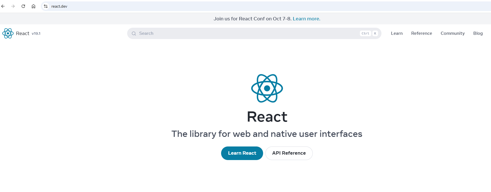
The Next.js decision came from understanding my deployment requirements and performance goals. I needed static site generation because this would eventually be hosted on GitHub Pages, but I also wanted the developer experience of a modern React framework. Next.js gave me both, I could build with modern tooling and deploy as static files. The framework's API routes let me prototype with mock data during development while keeping the door open for real data integration later. This architectural flexibility proved essential as the project evolved.
TypeScript integration happened because I learned from previous projects where small data handling errors cascaded into major debugging sessions. When you're transforming player performance data through multiple calculation layers before rendering it in charts. TypeScript caught countless issues where data structure assumptions didn't match reality, particularly when integrating different data sources. It also served as documentation for Claude Code, making it clear what data structures each component expected.
The static site architecture with GitHub Pages hosting wasn't just about cost (though free hosting helps), it was about reliability and performance. Football analytics tools need to be available when decisions are being made, often under pressure. Static sites eliminate server dependencies, database connectivity issues, and scaling concerns. The trade-off is more complex data handling on the frontend, but modern JavaScript tools make this manageable.
CJ: Sometimes the smaller touches go a long way, such as the subtle moving background, click accordion menus, report generations, and hover highlights. Can you talk us through a few of the smaller design aspects you think help with the responsive design?
T: The subtle details make the interface feel professional rather than functional. The animated football pitch background provides visual relief during long data analysis sessions while maintaining context, it's low-opacity Canvas animation that won't strain performance.
Hover highlights solve a real problem with dense data tables. When scanning player statistics, you lose track of which row you're examining. The Chelsea blue hover states guide the eye and reduce cognitive load using CSS transitions for smooth performance.
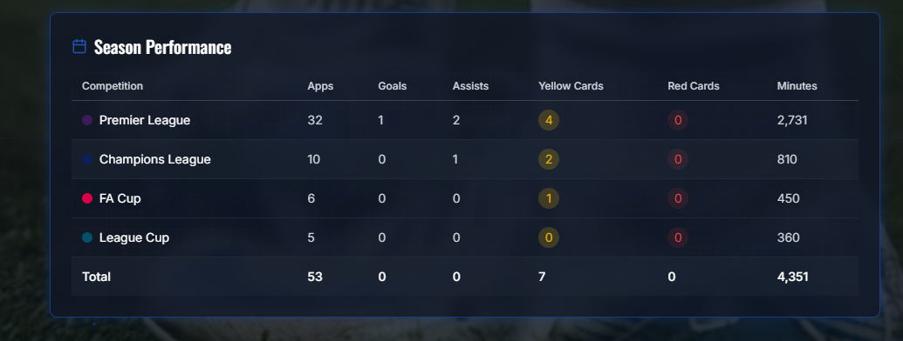
Accordion menus address mobile constraints directly. Football analytics requires multiple information categories, but mobile screens lack vertical space. Accordions let users control screen real estate while maintaining access to all data. Click interactions work better than hover on touch devices.
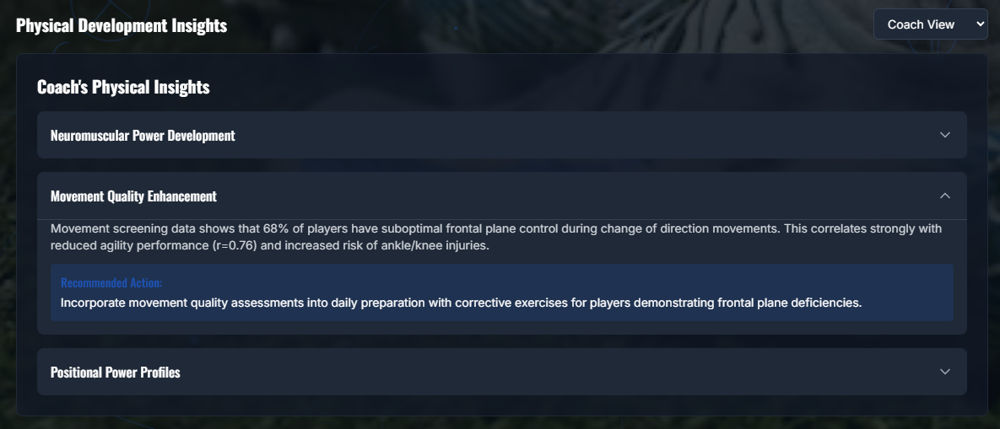
Report generation reflects actual usage patterns. Coaches need to extract insights and share findings, not just view data. The CSV/PDF export options serve different needs, CSV for analysis, PDF for presentations. These had to feel integrated, not bolted-on.
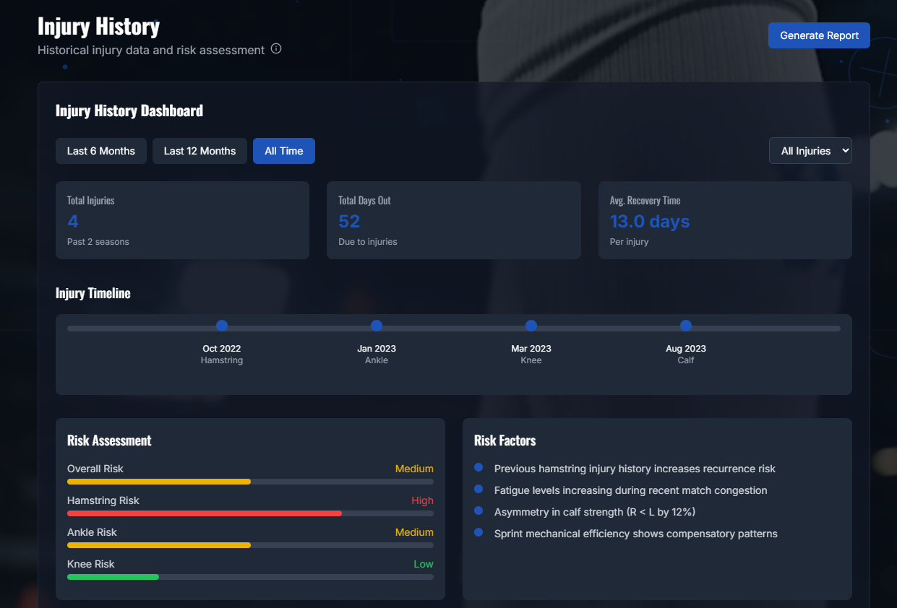
These micro-interactions compound to create responsiveness in both screen adaptation and user interaction feedback. Every hover and transition builds interface confidence through consistent visual language.
CJ: As you know competition was fairly fierce, with the shortlist being whittled down from 120+ entries to 50. I’m curious to hear as the overall winner, liked in Adedamola’s best component entry, as well as Antoine's functional design entry?
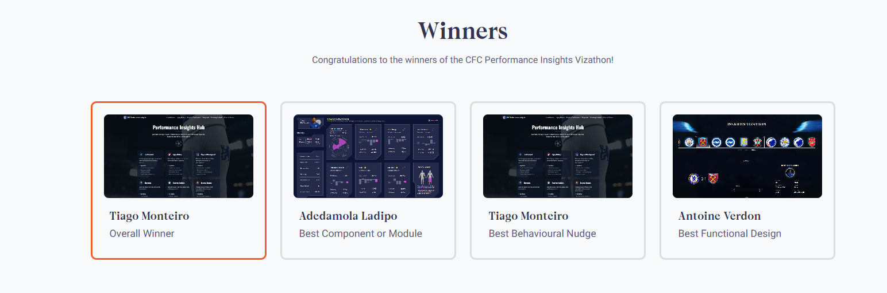
T: Both entries were outstanding. Adedamola’s dashboard impressed me with its elegant simplicity, it distilled years of expertise into visuals that feel effortless, yet beneath the surface it handles a complex array of metrics with seamless clarity.
Antoine’s UX/UI approach, meanwhile, captivated me by turning scrolling into an interactive narrative, every scroll down the page revealed a new insight, sparking curiosity and engagement.
While I focused on delivering a fully unified solution that weaves all six modules into a single cohesive story, I deeply admire how each of these peers excelled in their specialized strengths, and I walked away with several fresh ideas to incorporate into future projects.
CJ: This was your first time entering a vizathon, right? What advice would you give to others to be motivated to compete? Can we hope to see more from you in the sports industry in months to come?
T: Although this was my first Vizathon, I previously took part in the Portuguese Federation Datathon, where we built an end-to-end data pipeline to assess how match volume influences national team selection. My advice to aspiring competitors is simple: just try. You’ll connect with peers who share your passion for data and football, and you’ll discover that perceived boundaries are often just the starting point. Competitions like these force you to think differently, take calculated risks and grow as both analyst and storyteller. As for the future, you can certainly expect more, I’m committed to leveraging data to strengthen the football ecosystem and look forward to sharing new insights in the months ahead.For now, I will just keep working and trust that the opportunities I believe in will come.
Thank you once again, CJ, for your time and this wonderful opportunity. I truly appreciate it and look forward to what lies ahead.
LOGGING OFF,
CJ